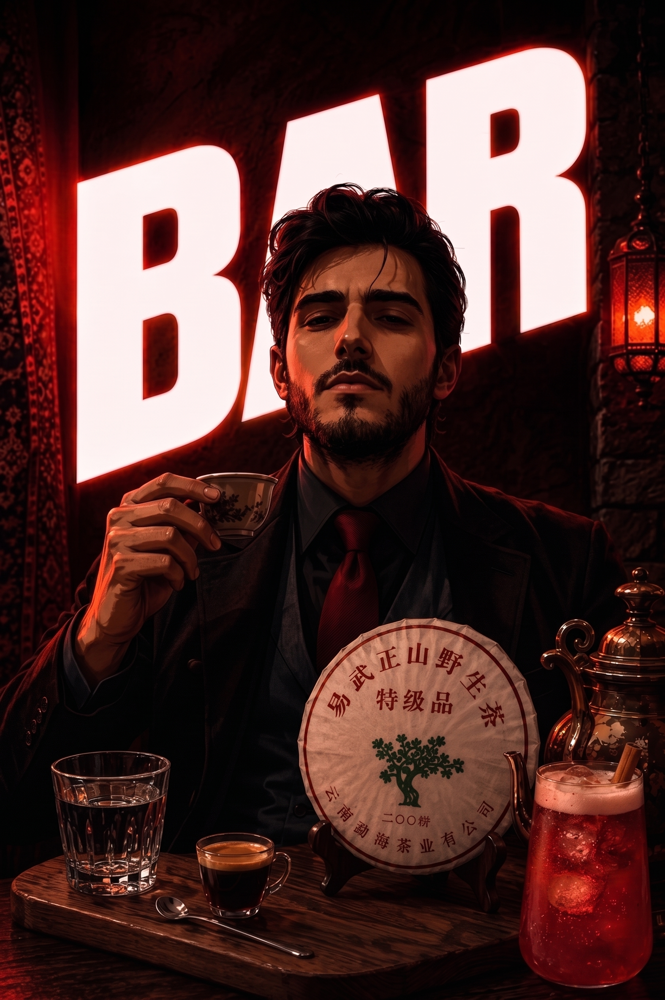

COFFEE // SPECIATLY
Спешелти Кофе & Эспрессо Консалтинг
Калибровка оборудования, настройка экстракции, профилирование обжарки, разработка базового и спешелти-меню.
Мультидисциплинарный подход: от калибровки спешелти-кофе и мастеринга пуэров до разработки сложных авторских напитков и инжиниринга процессов за баром.
«Вкус — это баланс науки, традиции и скорости отдачи, который можно и нужно масштабировать».

Объединяю западную кофейную инженерию с восточной чайной традицией и современной миксологией.
Калибровка оборудования, настройка экстракции, профилирование обжарки, разработка базового и спешелти-меню.
Профессиональная дегустация (каппинг чая), составление чайных карт, мастер-классы по работе с выдержанными пуэрами.
Создание уникальных кордиалов, сиропов и заготовок. Миксология на стыке кофе, чая, трав и специй.
Кейсы с демонстрацией бизнес-результата и уникального вкусового профиля.
Внедрение линейки авторских напитков на базе пуэров и кордиалов, снижение фудкоста на 18% при росте чека.
Смотреть разбор →Подбор спешелти-оборудования, проектирование эргономики бара, создание регламентов и тренинг бариста перед открытием.
Смотреть разбор →